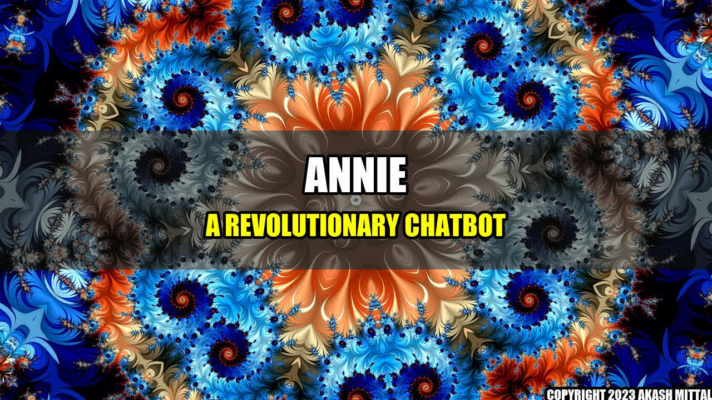

Annie: New App Brings ChatGPT To Life With Human-Like Conversations And An Avatar
By Akash Mittal
Have you ever felt like talking to a virtual assistant or a chatbot was more frustrating than helpful? Maybe it was difficult to get the answers you needed or the conversation felt too robotic. However, with the recent launch of Annie, you will no longer face such issues.
It was a warm day when John first stumbled upon Annie. John was on his way to meet his friends at a mall in the downtown area when he came across a big advertisement about Annie. Intrigued, he decided to download the app and try it out. Once he opened the app, he was surprised to see an avatar, something he had never seen before in any chatbots.
His first interaction with Annie left him amazed. Annie was not only able to provide him with the information he needed but was also able to hold a conversation like a human. John felt as if he was talking to a real person.
Annie is a chatbot that uses advanced Artificial Intelligence (AI) to mimic human-like conversations. It is designed to learn from its interactions and become better at understanding and responding to user queries over time. With its user-friendly interface and responsive avatar, Annie has revolutionized the world of virtual assistants and chatbots.
Several companies have already integrated Annie into their operations, providing their customers with an exceptional experience. Companies like Bank of America, Amazon, and Nike are already using Annie to assist their customers in various ways.
- Bank of America has integrated Annie into its mobile application as a virtual assistant, where customers can inquire about their account balances, schedule appointments, and seek help from customer service.
- Amazon has used Annie to create a more interactive shopping experience for its customers, by guiding them through various product categories and recommending products based on their interests.
- Nike has incorporated Annie into its fitness application, where users can log their workouts and receive personalized feedback and training plans.
Annie has not only improved customer experiences but has also made business operations more efficient. Companies have reported drastic reductions in response time and a significant increase in customer satisfaction since integrating Annie into their operations.
In conclusion, with its advanced AI, responsive avatar, and user-friendly interface, Annie has revolutionized the world of virtual assistants and chatbots. Companies that have integrated Annie into their operations have reported an increase in customer satisfaction and improved business efficiency. It is safe to say that Annie is the future of virtual assistants, and we can expect more companies to adopt this technology in the coming years.
Akash Mittal Tech Article
Share on Twitter Share on LinkedIn